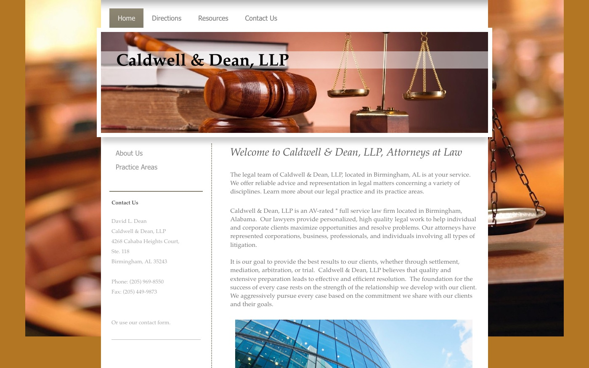
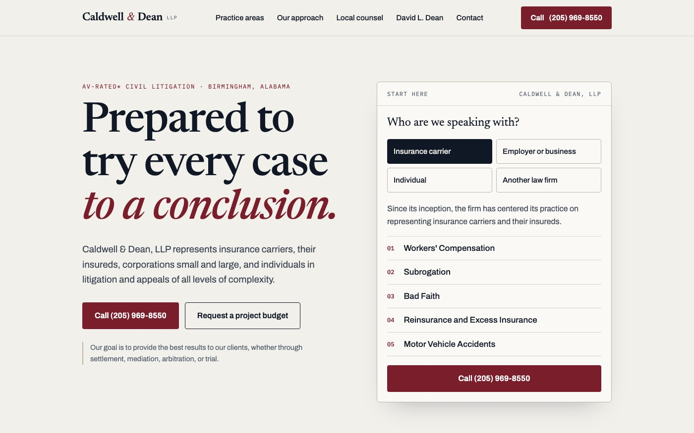
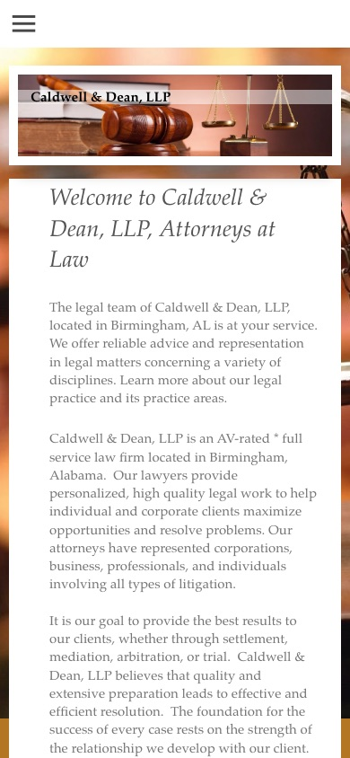
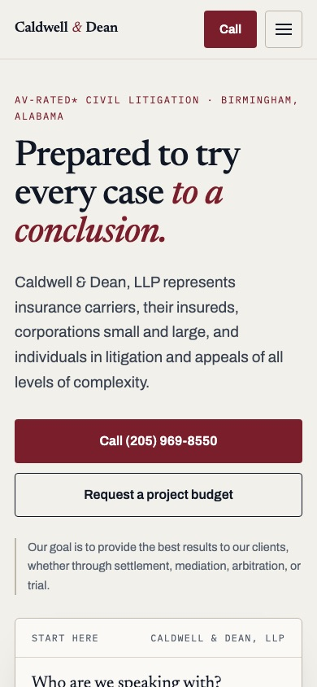

// Website concept · Caldwell & Dean, LLP
Nobody asked me to do this. I built a full redesign of the Caldwell & Dean website because I thought I could add value to the firm, using only what is already on your current site. Below is what changed and why it matters.
// Side by side
Same firm, same facts, same words. The first screen a visitor sees on a computer and on a phone.




// What makes this version better
Each one is something I found on the current site, and what the concept does about it.
Observations taken from the firm's public website on October 7, 2026. Nothing about the firm on the concept is invented. Which practice areas appear under each type of visitor is my first draft and is yours to correct.
// Why work with me
Williams Digital is my studio. When you call, you get me.
// Right down the road
I am based here in Birmingham. I can sit down with you at your office, walk through the concept on your own screen, and make changes while we talk. No call center and no time zones.
// 01
I design it, build it and answer the phone. Nothing is handed to an account manager or a contractor you never meet.
// 02
A law firm's site has to be accurate. Every statement on the concept came from your current site, and nothing goes live without your review.
// 03
Your domain, your content and your files stay in your name. It can be built on a platform your office can edit without calling me.
// 04
I am an Auburn University Computer Science Engineering graduate with more than 10 years of experience building digital platforms and user experiences.
// Next step
I made this concept on my own, so there is no obligation of any kind. These pages are not listed anywhere and search engines are told not to index them, so only people with the link can see them. If it is of interest, I would be glad to stop by and walk you through it.
Dylan WilliamsWilliams Digital · Birmingham, Alabama